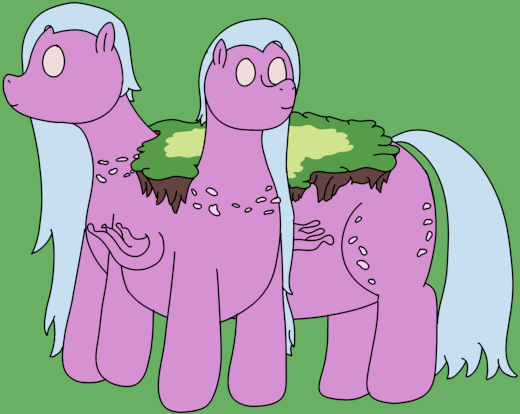

| Commonality | 15.6% |
| Stability | 8/10 |
| Attributes | Synchronicity: 9/10 Activity: 3/10 Peculiarity: 3/10 |
| Specials | Atmosphere accumulation World shell anchoring |
| Personality | Friendly and willing |
Bifurn are a moderately sized class of Ouroborae, with their bifurcated forms responsible for carrying arrow- or crescent-shaped landmasses. They are notable for their abilities to establish world shells, and are also the most common type of Ouroboran by a significant margin. A group of Bifurn is known as a curve, but a pair of Bifurn can also be called a cycle or a loop.
Bifurn are sizable continental Ouroborae, standing at roughly 2798 miles (4502.9km) tall. Their bodies are arranged in a bifurcated shape, with a secondary torso branching from the first just above the shoulder. The shoulder can be either the left or right, and as Bifurn tend to prefer to align themselves with the planet's axis and direction of rotation, these are often called "south" or "north" Bifurn, respectively. Bifurn typically carry rather climatologically diverse, but geographical homogenous continents, with a greater emphasis on temperature regulation rather than geological activity. This is particularly noticeable on the peninsula carried by the branching torso, which often has a different biome distribution than that of the main body.
Bifurn sport some unusual behaviours. They are the only Ouroborae other than Plurites to show a particular penchant for cooperation, particularly amidst themselves: Two Bifurn will often form into a "cycle" formation in which their bifurcated torsos stand side to side, their peninsulas almost touching. This does require the Bifurn to both have the same peninsula orientation, though two Bifurn of opposing orientation will sometimes stand so their peninsulas stand nose to nose, forming an arch-shaped section of land.
Bifurn are also typically the first Ouroborae to form a new layer of a world shell, leveraging extremely strong psionics to create the "anchor points" for themselves and other Ouroborae. These anchor points are extraordinarily strong, able to support even the full mass of a Regalid. All Ouroborae are capable of Anchoring themselves to some degree, but Bifurn are particularly instrumental in helping a new Ouroboran into a new spot within the shell, dampening momentum and helping in the accumulation of atmosphere.
Bifurn, perhaps surprisingly, do not support many genetic oddities, aside from explicable triggers that cause peninsula formation. It is theorized that their simplicity and their commonality go hand in hand, though no solid connection has ever been proven, given Ouroborae already show relatively minimal genetic variation.
I still do not understand fully how Ouroborae form, but Bifurn tend to crop up more often than most. It is a useful situation to have: They are the best at making space for the others, and the fact they enjoy cooperating is quite helpful. I can't help but find their friendly personalities charming. They are a bit big for me to kiss their cheeks, but I believe they understand that they know I would if I could.
Bifurn were made as a more "regular" Ouroboran to contrast the high-tectonic activity Tremorids; particularly in regards to giving a "common" Ouroboran that's generally good for most things. Their commonality reflects reality: "Crescent-shaped" continents make up two of the seven on earth (South America and Africa), representing a considerable amount of land area even compared to the larger Eurasian continent.
